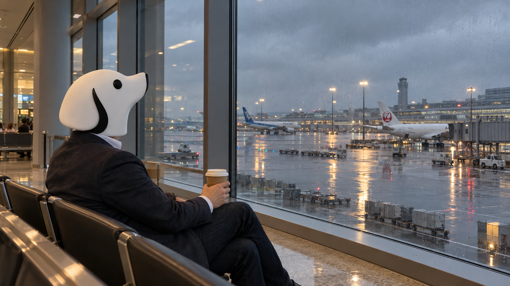
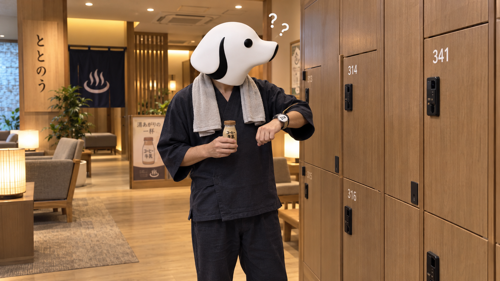
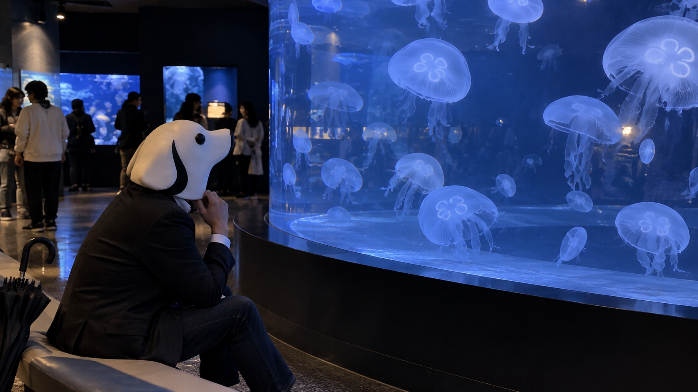
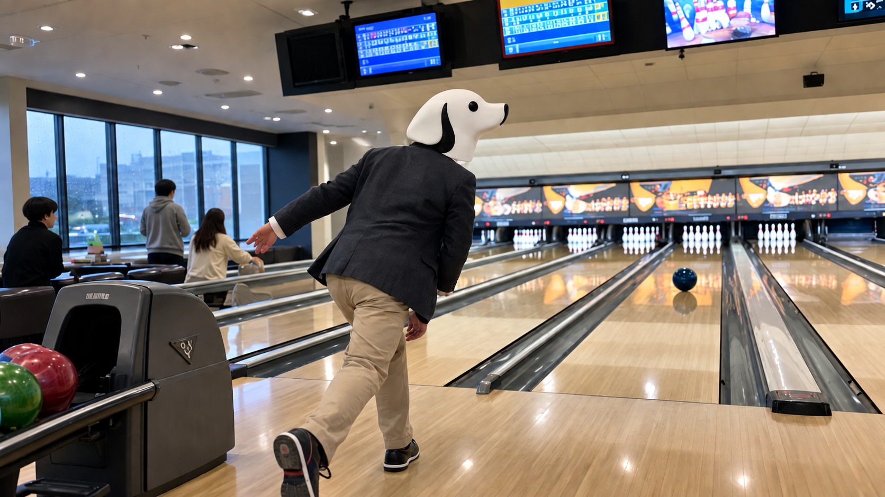
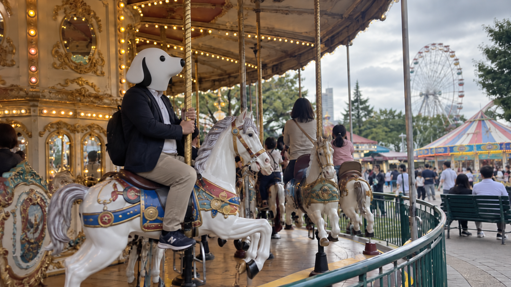
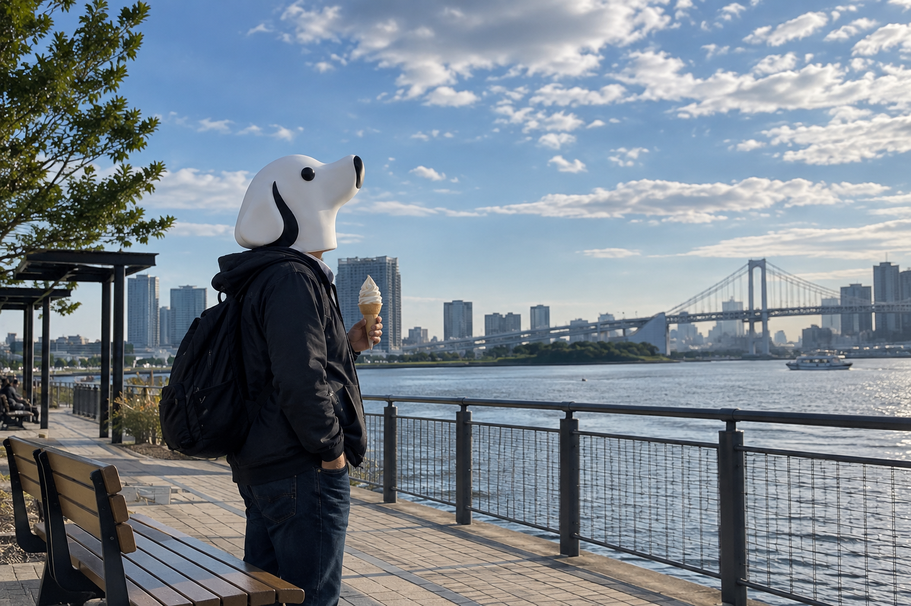
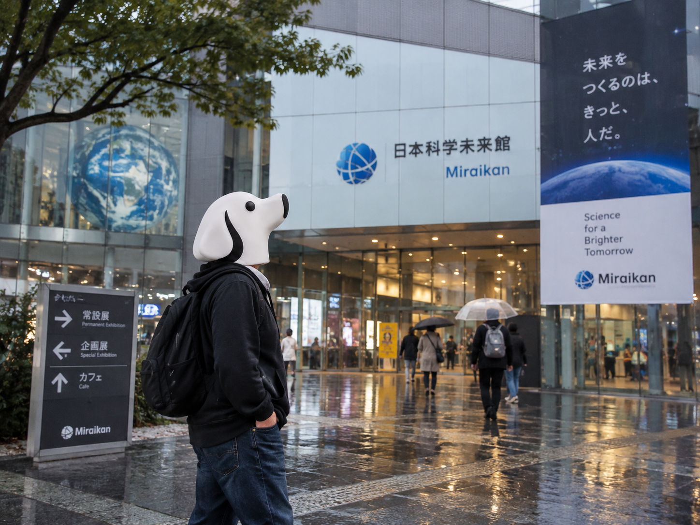
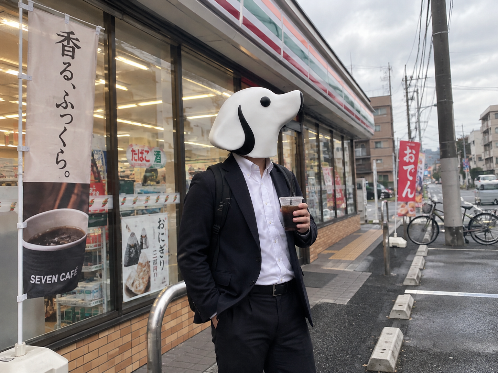
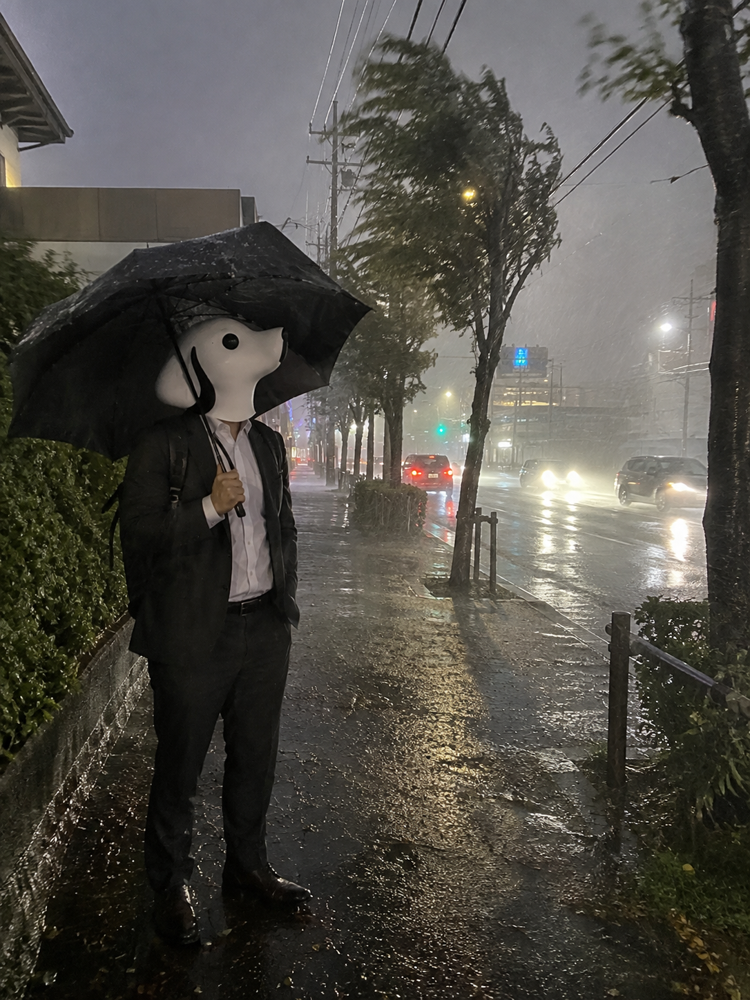

CEO'S NOTE
CEO's Note
TY-Dev Works CEO T-Yが、製品開発やソフトウェア、そして時々散歩について綴ります。

2026.09.30
飛ばない日に、出発口へ行く
雨の羽田空港へ一人、搭乗予定ゼロのCEO。人の流れで保安検査場まで進み、AIエージェントの「目的・権限・止まり方」を考えます。

2026.09.29
341を、なぜか314で覚える
雨の日に一人で温浴施設へ。ロッカー番号を勝手に覚えやすく変換したCEOが、AIのリスク開示と「失敗を説明すること」を考えます。
2026.09.28
暗い映画館で、一列ずれる
雨の日に一人で映画館へ。座席を一列間違えたCEOが、AIエージェントの安全策と「間違える前提の設計」を考えます。

2026.09.27
クラゲを見ながら、急がないことを考える
雨の日の東京で一人、水族館へ。クラゲを眺めながら、速さだけでは測れない開発の進み方について考えます。

2026.09.26
雨の日に、真ん中へ投げる
雨で肌寒い東京。CEOは一人でボウリングへ。新しいCopilotを読みながら、任せることと放っておくことの違いを考えます。

2026.09.25
回る木馬で、作ることの意味を考える
曇り空の東京で一人、メリーゴーラウンドへ。AI映像産業のニュースを読みながら、作る速さより「何を作るか」を考えます。

2026.09.24
海を見ながら、止められる仕組みを考える
晴れ間の戻った東京湾沿いで一人、AIの制御とサイバーセキュリティを考える。最後に制御不能になったのはソフトクリームでした。

2026.09.23
雨の科学館で、AIの未来を考える
雨の東京で一人、科学館へ。GPT-6、AIの安全性、人類の未来を考えた末、CEOは傘立ての主キー設計に悩みます。

2026.09.22
市場がお休みの日に、コーヒーを買いに行く
東京市場がお休みの朝、CEOはコーヒーを買いに出ました。世界ではAI株、原油、為替、外交が忙しく動いています。

2026.09.21
嵐の日に、少し遠回りをする
相変わらずの嵐ですが、僕は外に散歩にきています。TY-Dev Worksを始めた理由と、小さなソフトウェアについて。